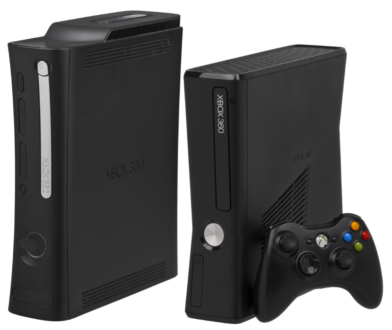

Xbox fue la primera videoconsola de sobremesa producida por Microsoft, en colaboración con Intel. Su principal característica es
su procesador central basado en el procesador Intel Pentium III. El sistema también incorpora un lector de DVD, un disco duro
interno, puerto ethernet y por último el sistema dispone de cuatro conectores para los mandos. Las unidades vendidas de este
equipo fueron 24 millones de consolas, según las cifras oficiales.

Xbox 360 es la segunda videoconsola de sobremesa de la marca Xbox producida por Microsoft. Fue desarrollada en colaboración con IBM y
ATI y lanzada en América del sur, América del Norte, Japón, Europa y Australia entre 2005 y 2006. Su servicio Xbox Live (de pago)
permite a los jugadores competir en línea y descargar contenidos como juegos arcade, demos, tráilers, programas de televisión y
películas. La Xbox 360 es la sucesora directa de la Xbox, y compitió con la PlayStation 3 de Sony y Wii de Nintendo como parte de
las videoconsolas de séptima generación.
Desde su lanzamiento en 2005, existen cinco modelos de los cuales dos están a la venta, los modelos Slim y Elite. La consola ha tenido
buen mercado en Norteamérica, Europa y otras regiones del mundo (con la excepción de Japón).5 A fecha de enero de 2009, Microsoft
había vendido 39 millones de consolas, según las cifras oficiales.6 Se suspende la producción del modelo premium el 28 de agosto de 2009,
pero las unidades seguirán siendo vendidas hasta que se agote el suministro. Existe un nuevo modelo disponible, el S, el cual posee una
arquitectura nuevamente diseñada, y la nueva de edición limitada la E que el pack trae FIFA 14, la consola y un mando. Como principales
características de este modelo se encuentran la inclusión de Wi-Fi y de un sistema más silencioso.7

Xbox One es la tercera videoconsola de sobremesa de la marca Xbox, producida por Microsoft. Forma parte de las videoconsolas de octava generación,
fue presentada por Microsoft el 21 de mayo de 2013. Es la sucesora de la Xbox 360 y actualmente compite con PlayStation 4 de Sony y Wii U de Nintendo.
Su salida a la venta fue el 22 de noviembre de 2013 a un precio de 499 dólares.
La consola Xbox One se empezó a gestar tras la salida al mercado de su antecesora, la Xbox 360. Aunque los medios especializados la bautizaron como Xbox 720,
8 el primer kit de desarrollo oficial creado por Microsoft recibió el nombre en clave de Durango9 y se puso a disposición de algunos desarrolladores a mediados
del año 2012. Sin embargo no fue hasta el 21 de mayo de 2013 que la compañía hizo oficial su existencia bajo el nombre de Xbox One.10 Tras esta primera presentación,
tuvo lugar una segunda en el E3 2013 donde se revelaron muchas de las características de la máquina que ya era totalmente jugable.